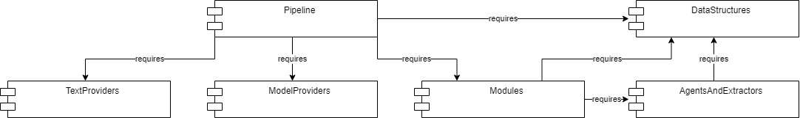
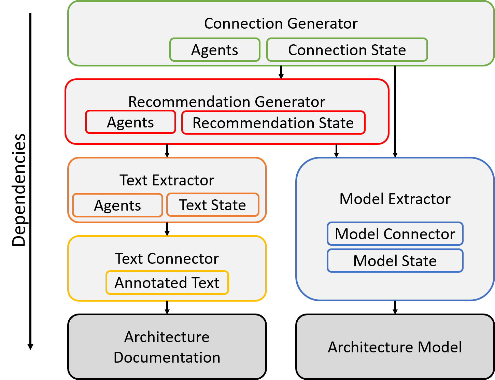

Pipeline#
Warning
This site is deprecated
The project is divided into multiple parts. These parts can be seen as a pipeline:

The image shows the idea and theoretical processing of the approach. Based on the architecture documentation and the architecture model on the left side links between them should be found. Therefore, the elements of both artifacts have to be recognized and extracted. Obviously, this is much more complicated in natural language than in a formal model. On the side of the formal model only the elements have to be extracted (blue). On the other side, the process of extracting elements is divided in three steps: The preprocessing (yellow), the extraction of information, and the generation of elements. The goal of the preprocessing is to analyse the text and annotate additional language information to it. These could be dependencies, name-tags, or found relations between words. In the next step, the information extraction (orange), all semantically information should be collected that could help to identify elements and relations between them. This includes for example potential types and names of model elements. Ideally, the element generation (red) can combine these information to build elements. Since these textual identified elements should be compared and linked to model elements, they should have a similar structure as the model elements (e.g. name, type).
In this project this pipeline is built out of multiple maven modules. In the following, the highest level will be explained.
The agile design enables to rearrange or replace each step of the pipeline. Thereby, the pipeline (or parts of it) could be reused in other ways. The Pipeline is located in its own module. To process the input artifacts to an internal representation, the pipeline requires the TextProviders and ModelProviders modules. These models are subdivided in submodules, that enable to exchange or extend the present providers. Thereby, both modules contain a module that defines the interface, as well as one with an examplary implementation. The other steps of the pipeline are internally called Modules. They can be arranged freely in the pipeline (regarding the inter-dependencies). The modules module is subdivided in multiple modules respective their use case. Every module requires the DataStructures module, since they work on the structures defined in them. Since the modules are internally, substructered in the different stages of the pipeline, the datastructures provides different structures for each stage. Through the decapsulation, models are freely combinable with structures. For reduced imports the datastructures module is divided into abstract definitions and implementations (for example default implementations). Internally of modules, AgentsAndExtractors are executed. Every agent has a specific goal (e.g. the detection of named entities). To fulfill this task an agent can have multiple extractors. Extractors run over the annotated text and extract needed information for the current stage. The difference between agents and extractors will be explained in more detail in the further wiki entries.
The default pipeline consists of multiple inter-dependent steps (as you can see in the first image). The default implementation of these theoretical steps has more dependencies:
{kind=link}
Stages#
Text Preprocessing#
The first step on the informal artifact, is the preprocessing of the architecture documentation (yellow). The architecture documentation is given via a .txt file in resources and has to be entered in the configuration file. It should not contain any images, tables, or listings. The approach is started via the Pipeline. There, INDIRECT runs over the text and preprocesses it. Notice, that some agents of the project are dependent on some preprocessing steps! The results of the preprocessing are stored as an annotated text. This text is then used as base for the rest of the approach (except for the model extractor (blue)).
Text Extraction#
The text extractor (orange) is dependent on the annotated text and is equivalent to the information extraction of the theoretical pipeline. In this step, possible objects, subjects, and relations are searched. This project applies the principle of thinning out unnecessary information. Thus, in this stage, it is more important to extract information with a high recall than a high precision. The results of this stage are stored in the text state.
Model Extraction#
The model extractor (blue) is equal to the element extraction of the theoretical pipeline. Currently, the only available model connector is the hard coded model connector. The model information can be provided via a helper class (like a model of TEAMMATES). The hard coded model is fetched from the model extractor (via the connector) and loaded in the model state. Since the formal artifact (the model) does not need to be preprocessed a separation of the connector and extractor is not necessary (in contrast to the informal side of the approach).
Recommendation Generation#
The goal of the recommendation generator (red) is to build potential elements that could occure in the model, based on the extracted textual information. The properties of the elements depend on the underlying model (respectively the properties of the elements in this model). Thereby, the recommendation generator is dependent on some general model knowledge. The elements can be objects (e.g. UML classes), as well as relations between objects. The recommendation generator represents the element generation of the theoretical pipline. Its results are stored in the recommendation state.
Connection Generation#
The connection generator (green) is the last step of the approach and connects the potential, from the recommendation generator extracted elements to the elements of the given model. Therefore, links are created between elements found in the text and elements of the model. The links are stored in the connection state. This step is equal to the link generation of the theoretical pipeline.